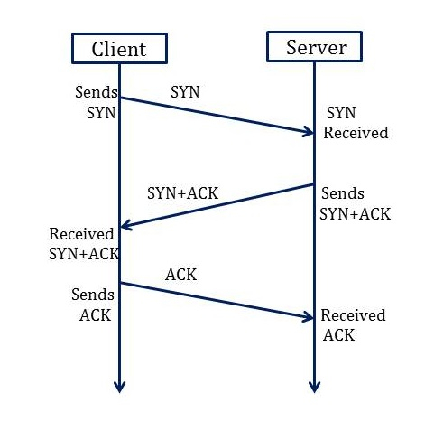
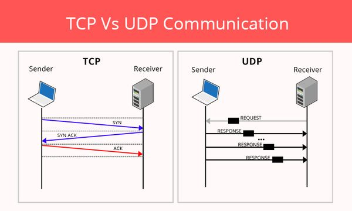
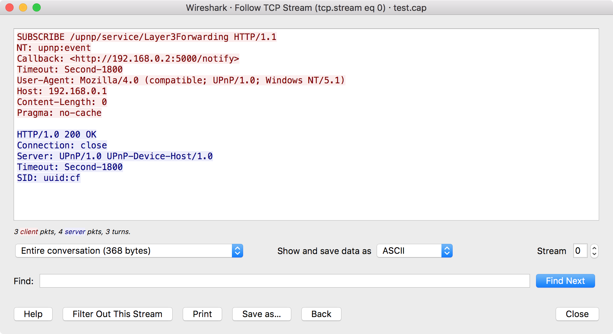
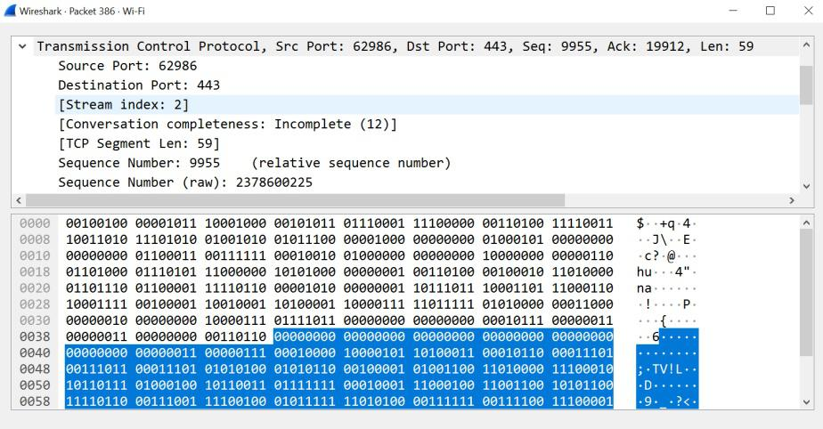

前言
本篇將以「實務理解」為導向，說明 TCP / IP / UDP 在實際網路行為中的角色，而非單純理論背誦。
在先前的文章中，我們已透過實際範例觀察過「程式對外連線時會發生什麼事」。
本篇刻意 不再依賴特定樣本或程式，而是回到更底層的問題：
- 封包在網路中究竟是如何被送出的？
- TCP、UDP、IP 各自負責哪一段工作？
- 為什麼在封包分析工具中，這些協議會同時出現？
你會得到的成果
- 能說清楚一個封包「從哪裡來、要往哪裡去」
- 能分辨 TCP 與 UDP 的使用情境
- 在 Wireshark 中看到封包時，不再只是看欄位，而是理解行為
0. 建立一個「最小可用」的網路分層模型
我們不追求完整，而是追求足以支撐分析工作的理解模型。

| 層級 | 解決的問題 | 常見協議 | 分析時會看到的資訊 |
|---|---|---|---|
| 應用層 | 程式在做什麼 | HTTP、DNS、TLS | Domain、URL、Query |
| 傳輸層 | 資料怎麼送、可不可靠 | TCP、UDP | Port、Stream、重傳 |
| 網路層 | 封包要送去哪 | IP | Src / Dst IP、TTL |
| 網路存取層 | 本地網路如何傳遞 | Ethernet、ARP | MAC、ARP 封包 |
這裡只需要記住一件事：
- IP：負責「送到哪一台」
- TCP / UDP：負責「怎麼送」
1. 從實際行為理解三個核心協議
1.1 IP：只負責「找到目的地」
IP 本身不關心：
- 封包是否會成功送達
- 封包順序是否正確
- 封包內容是什麼
它只負責一件事：
把封包往「目的 IP」的方向送出去。
因此在任何封包分析中，IP 幾乎一定存在，因為沒有 IP，封包無法離開本地網路。
1.2 TCP：為了「確定有送到」
TCP 解決的是「可靠性」問題。

實務分析時，你只需要關注三個行為：
- 三向交握：是否成功建立連線
- 重傳：是否出現封包遺失或延遲
- 連線結束方式：正常關閉（FIN）或異常中斷（RST）
TCP 特別適合分析的原因是：
- 有明確的連線生命週期
- 可以透過
tcp.stream聚焦單一通訊行為
1.3 UDP：速度優先，不保證結果
UDP 不建立連線，也不保證封包一定到達。

常見使用情境：
- DNS 查詢
- 即時通訊
- 串流、遊戲
分析 UDP 時，重點不在單一封包，而在「整體模式」：
- 封包數量是否異常
- 傳送頻率是否固定
- 目的 IP / Port 是否集中
2. 在封包分析中如何實際運用這些概念
理解協議的價值，在於你能更快縮小問題範圍。
2.1 第一層判斷：TCP 還是 UDP
看到流量時，先問自己：
這個行為需要可靠傳輸，還是速度優先？
這個判斷，會直接影響你後續的分析策略。
2.2 TCP 流量的基本分析流程


- 過濾 TCP 封包
- 找到連線建立點（SYN）
- 使用
Follow TCP Stream - 檢查：
- 是否有重傳
- 是否異常中斷
- 是否長時間維持連線
此時你分析的已不是單一封包，而是一條完整的通訊行為。
2.3 UDP 流量的分析思維
由於 UDP 沒有連線概念，分析時應改用：
- 整體封包數量
- 傳送節奏與間隔
- 目的地是否高度集中
3. 為什麼不能只背協議定義
如果只停留在定義層級，常會遇到以下問題：
- 知道 TCP 很可靠，但不知道「代價是延遲與額外流量」
- 知道 UDP 很快，但不知道「錯用會導致資料不可預期」
- 看得懂欄位，卻無法解讀整體行為
這也是本篇刻意從「行為」而非「名詞」切入的原因。
4. 作業題目
- 作業 A：找出一組完整的 TCP 三向交握，列出由本機送出的第一個 SYN 封包之「Raw Sequence Number」與「Relative Sequence Number」。
- 作業 B：在 HTTPS 連線中，截圖 Client Hello 封包，並說明為什麼在
Follow TCP Stream中看到的是亂碼？若 Wireshark 未自動解析 TLS，應如何手動展開？ - 作業 C：觀察 Client Hello 的 Destination MAC Address，說明該 MAC 是否為目標伺服器，並解釋原因。
結論
- IP 是地址：決定封包往哪裡去
- TCP 是可靠連線：關注交握、重傳與結束方式
- UDP 是速度優先：分析整體行為模式
- 在分析中，「看懂行為」比「記住名詞」更重要